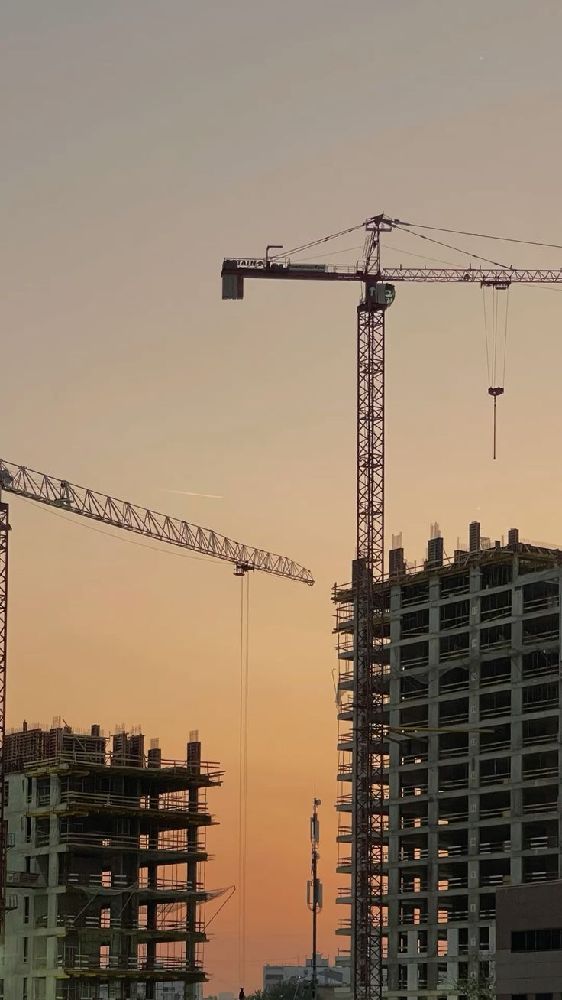

Project Portfolio
Proof of work across campuses, structures, foundations, and site delivery.
Browse Win Everest project experience by sector, scope, and delivery focus. Each project page explains what the work demonstrates for future clients and partners.

Portfolio Coverage
From first groundworks to completed institutional environments.

Education campus
Taunggyi Education Degree College
Campus building work covering exterior completion, circulation areas, site coordination, and handover readiness.
- Scope
- Building construction, finishing, site coordination
- Focus
- Quality completion and campus usability

University work
Meiktila University
Structural work, scaffolding, site supervision, and completion planning for university facilities.
View details
Campus upgrade
Mandalar University
Site review, stakeholder coordination, and practical construction management for campus improvement work.
View details
Low-rise facility
Meikhtilar Monetaine
Masonry, roof work, exterior completion, inspection, and practical handover preparation.
View details
Completed build
Institutional Building Completion
Exterior quality, circulation planning, site presentation, and durable public-use environments.
View details
Foundation works
Foundation & Rebar Works
Ground preparation, excavation, rebar installation, formwork, concrete pouring, and early quality checks.
View details
Design-build
Design-Build Multi-Storey Complex
Concept coordination, design translation, structural framing, space planning, and turnkey delivery.
View detailsDelivery Method
How Win Everest turns project intent into finished work.
Site Establishment
Survey confirmation, logistics planning, site access, material storage, and boundary control before major work begins.
Structural Execution
Excavation, reinforced steel, formwork, concrete pouring, scaffolding, and construction sequencing.
Project Control
Schedule monitoring, manpower coordination, procurement timing, subcontractor alignment, and client communication.
Completion Quality
Exterior and interior finishing, safety checks, environmental controls, and handover readiness.